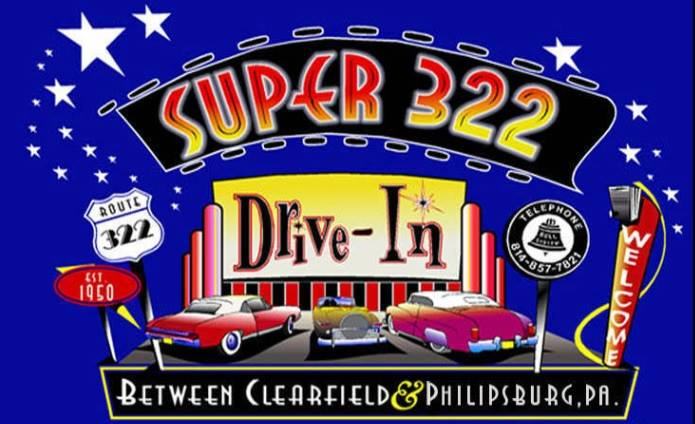

Meet the Owners
After working for over 20 years at the theatre, Bill Frankhouser, together with his wife Barb, purchased the Super 322. They have also made improvements including a new marquee complete with a colorful neon sign.
Heidi, the Drive-In Mascot
About Heidi
Neon Exposure
Sign Guy
Big Bubba - Our Digital Projector
The Super 322 opened for the 2014 season in digital, having the projector holding the record for the brightest light on the planet!!
About Super 322
When was it established?
The Super 322 Drive-in Theatre was opened on May 26, 1950. Built by the Theodore Grance Outdoor Theatre Co., ownership changed hands a few times until being bought in the 1970s by Royer and Favuzza from the Bellefonte area. They made improvements including AM radio; the Super 322 was Pennsylvania's second drive-in to add am AM radio sound system. In the 1980s, FM stereo sound capabilities were added.
Restoration of the Super 322
In 2001, the Super 322 Drive-in Theatre was granted eligibility to be listed in the National Register of Historic Places by the Pennsylvania Museum Commission. In 2005, one the original neon signs was back in use after being restored. It features pink neon. The entrance lights have been replaced as has been the entire fence at the back of the field. The ramps have all been graded and re-shaped so you can enjoy the best view of the big screen. The ticket booth was replaced in 2010.
How many people and cars can it hold?
After the removal of external speakers the capacity of the drive-in increased to about 650 cars.
Help us by donating!
GoFundMe info and link
Documentaries
List of Documentaries
